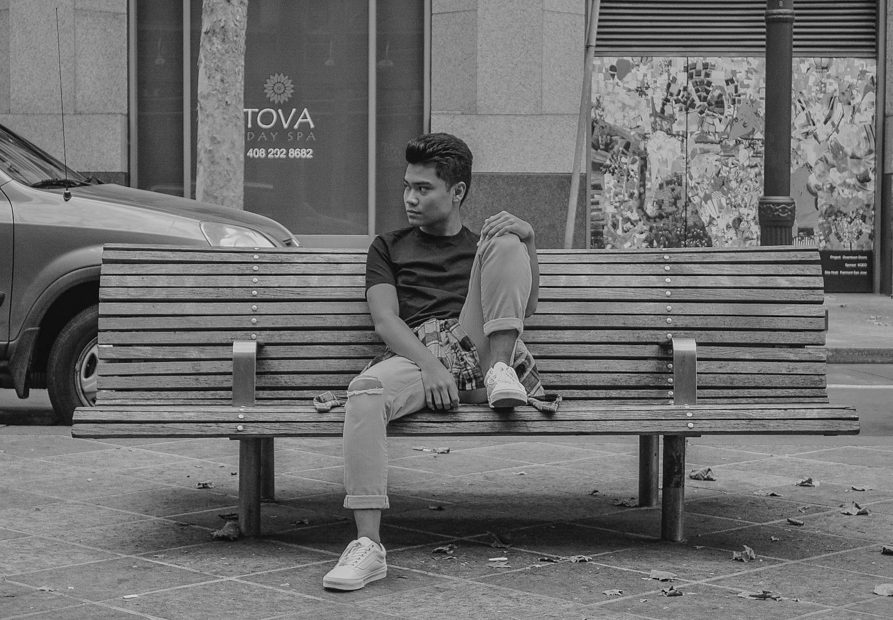

I am currently majoring in Digital Media Art at San Jose State University. I love to express my creativity through art digitally & traditionally. I was born in the Philippines and moved to San Jose, California which I currently reside in. I am still growing as an artist and learning new techniques in order to achieve the goals I have for the future.